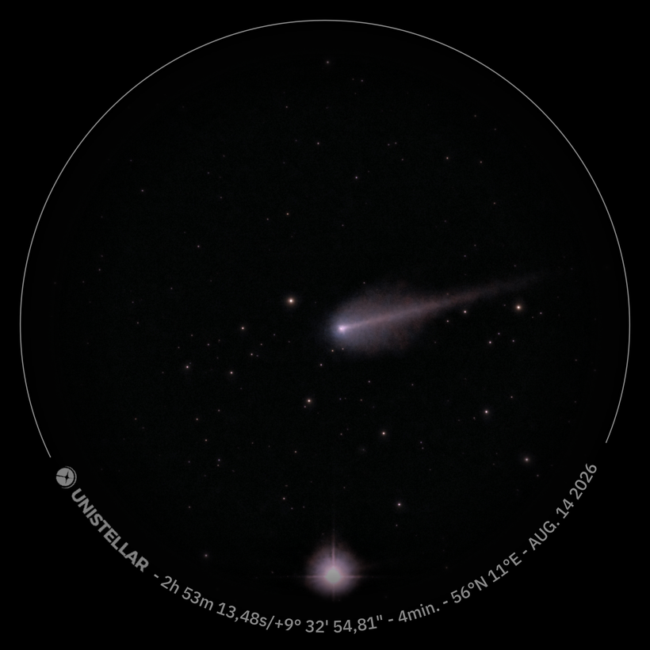
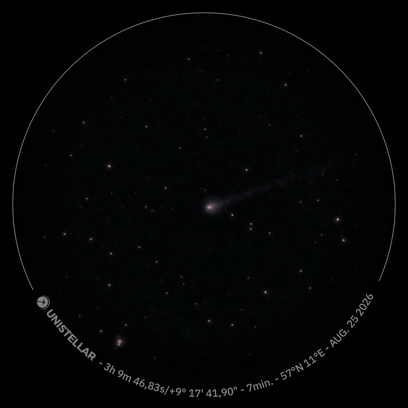

Gauss's orbit determination tested on five of my own images of comet 220P/McNaught, 14–25 August 2026 — and what went wrong along the way
Michael H. Grant · Sostrup, Djursland · 56°30′N, 10°50′E
A student who has calculated correctly gets the right answer. That is the contract in upper secondary school, and it mostly holds. But there are calculations in which the contract is broken in a way worth showing: the calculation converges nicely, it gives a small residual — and the result is wrong nonetheless.
On 1 January 1801 Giuseppe Piazzi in Palermo found an object moving among the stars. He followed it for 41 days, after which it disappeared into the glare of the Sun. The astronomers thus had a couple of dozen positions of an object that would not reappear for a year — and no usable method of predicting where.
The 24-year-old Carl Friedrich Gauss solved the problem in the course of the autumn. The method — three observed directions, an elimination that ends in an eighth-degree polynomial, and an iteration — made it possible to rediscover Ceres on New Year's Eve 1801, almost exactly where Gauss had said. In outline this is still how one gets a first guess at the orbit of a newly discovered minor planet.
220P/McNaught is a perfectly ordinary Jupiter-family comet with an orbital period of 5.5 years. It passed perihelion on 14 June 2026 and by all accounts should have been invisible to amateur equipment, with a predicted magnitude of about 16. In mid-August it went into outburst and rose to about 9.5 — a good six magnitudes, i.e. a factor of three hundred in brightness.
That made it a rewarding target for a 114 mm Unistellar eVscope2. I recorded it five times between 14 and 25 August with exposure times of three to seven minutes.


The basic relation is simple enough for the blackboard. The comet's heliocentric position vector $\mathbf r$, the observer's heliocentric position vector $\mathbf R$ and the observed direction as a unit vector $\mathbf u$ are related by
where $\rho$ is the unknown distance from the Earth — strictly from the observer — out to the comet along the line of sight. It is often called the geocentric distance, i.e. the distance as seen from the Earth; that the observer sits on the surface rather than at the centre changes it by at most one Earth radius in about 28,000. We know $\mathbf R$ at all times — it is the Earth's orbit plus the observer's place on the globe — and we measure $\mathbf u$. What remains is $\rho$.
Three observations give nine equations and nine unknowns, but they are not independent: all three position vectors lie in the same orbital plane, so the middle one can be written as a linear combination of the other two. The coefficients are expressed by Lagrange's $f$ and $g$ functions, which to lowest order depend only on the time intervals and on $r_2$ itself. The elimination leads to
where $A$ and $B$ are known quantities from the observing geometry and $\mu = k^2$. One finds the usable root, calculates the three position vectors, derives the velocity, and repeats with exact $f$ and $g$ instead of the series expansion until the calculation stands still.
Three directions from an observer who is himself moving fix the distance through one thing only: the way in which the observed path deviates from a great circle.
Draw the three observations on the celestial sphere and lay a great circle through the first and the third. The middle one does not lie on it — it lies a little to one side. That little piece is called the sagitta, and it is all you have. In Gauss's formalism it is exactly what the determinant $D_0 = \mathbf u_1\cdot(\mathbf u_2\times\mathbf u_3)$ measures; if it vanishes, the polynomial becomes singular.
The curvature of a conic-section orbit is approximately constant over short time spans, so the sagitta grows as the square of the arc length, while the measurement uncertainty is the same no matter how long you wait:
Double the arc gives four times the signal. That is the whole story — and you can try it yourself below.
Below, the full method runs in your browser. The page produces three artificial observations of 220P/McNaught from the true orbit, adds the noise you choose, and then runs Gauss's method on them — eighth-degree polynomial, root finding, iteration with universal variables, the lot. Compare the orbit found (gold) with the true one (white).
Left: the comet's path across the sky in the chosen time span, with the chord between the first and last observation and the sagitta marked. Right: the determined orbit seen perpendicular to the ecliptic. The systematic offset shifts all three observations equally — notice how little Gauss's method cares, and compare with the section on least squares further down.
2 days, σ = 40″ — my first three nights. The method falls back on the Earth's own orbit, $a \approx 1$ AU, and it gives no warning at all.
11 days, σ = 40″ — where I ended up. Now a real comet orbit comes out, but the semi-major axis is still far off.
11 days, σ = 2″ — the same images, but plate-solved against a star catalogue instead of the telescope's own coordinates. That is the one thing that would have changed everything.
Five exposures, the times taken from the images' EXIF fields (which turn out to give the start of the integration — the midpoint is used in the calculation):
| Image | Time (UTC) | Eksp. | Δα·cos δ | Δδ |
|---|---|---|---|---|
| 14. august | 00:33 | 4 min | −86,5″ | −53,4″ |
| 15. august | 00:15 | 3 min | −73,6″ | −8,4″ |
| 16. august | 23:10 | 3 min | −143,2″ | +10,2″ |
| 20. august | 01:16 | 4 min | −48,9″ | −38,2″ |
| 25. august | 22:57 | 7 min | −43,4″ | −55,5″ |
The last two columns are the deviation from the ephemeris. They split into an almost constant offset of −79″ in right ascension plus a scatter of 40″ around it. Neither comes from my measurement of the nucleus in the images — the comet is less than 58″ from the field centre in all five exposures — but from the coordinates the telescope's app itself stamps on each image.
With the best-distributed epochs, 15, 20 and 25 August, five days apart:
| Element | Gauss | JPL | Deviation |
|---|---|---|---|
| ρ₂ (AE) | 1,259 | 1,176 | +7 % |
| q (AE) | 1,618 | 1,559 | +4 % |
| i | 8,64° | 8,12° | 0,5° |
| Ω | 153,19° | 150,09° | 3,1° |
| ω | 182,86° | 180,57° | 2,3° |
| a (AE) | 5,69 | 3,121 | +82 % |
| e | 0,715 | 0,500 | +43 % |
Notice how the result splits in two. The orbital plane and the orientation within it — the inclination, the line of nodes and the direction of perihelion — hit within three degrees, and the perihelion distance within four per cent. But the semi-major axis is 82 per cent too large.
That is no accident. The orbital plane is fixed by the directions alone: the three position vectors must lie in one plane, and that plane can be found without knowing the velocity particularly well. The semi-major axis, on the other hand, follows from the vis-viva relation,
that is, from the square of the velocity — and the velocity comes out as a difference between position vectors divided by a short time interval. The measurement uncertainty is amplified twice along the way. That is why the direction comes out right long before the size.
This is where the story ought to end happily. Gauss's method uses only three observations and throws the rest away; I had five. The obvious next step is the method of least squares — which Gauss incidentally also invented along the way — with the position vector and velocity at one epoch as six unknowns, ten residuals to minimise, and Gauss's solution as the starting guess.
I did that. The fit converged nicely and ended with a residual of 24.2 arcseconds. That is better than any of the three-point solutions. The orbit had $a \approx 1.4$ AU.
By comparison, the true orbit — the one JPL has from hundreds of professional observations over several revolutions — gives a residual of 67.3 arcseconds on my five positions. The method of least squares thus prefers the wrong orbit, and it is perfectly right to do so: the wrong orbit fits my numbers better.
The explanation is the constant offset of −79″. It is harmless for a three-point determination — it shifts all the observations equally and does not change the curvature of the arc; you can see this for yourself in the laboratory above by turning the systematic slider. But it is not harmless for a fit. A fit has enough degrees of freedom to bend the orbit until it predicts positions lying 79″ to one side of the true ones — and then the residual falls. $\chi^2$ does not protest.
The scaling argument stands on its own. You do not need Gauss's method to understand that the signal grows as $(\Delta t)^2$ while the noise stands still. It is a conversation about orders of magnitude that can be had in twenty minutes, and it correctly predicts when the experiment will succeed. It is rare for a back-of-the-envelope estimate to be so directly testable.
The error propagation is concrete. That the directional elements hit while $a$ and $e$ do not is a textbook example of how it matters whether a quantity depends on the data linearly or quadratically. Here you can see it in the numbers instead of reading about it.
The difference between systematic and random error for once does not stay abstract. One you can measure your way out of, the other you cannot.
And finally: a calculation can converge nicely and give the wrong answer. That is a point that reaches far beyond comet orbits, and one that does not become less relevant as our students increasingly get their numbers from tools that never say they are in doubt.
The investigation began as a question of arc length and ended as a question of astrometric accuracy. At eleven days the arc is no longer the binding constraint; the stamped coordinates are.
The solution is straightforward and costs nothing. I saved the fourth exposure as an uncropped raw export alongside the annotated one, and it can be plate-solved against a real star catalogue — ASTAP or astrometry.net with a Gaia index — which routinely gives one to two arcseconds on a field like this. That is forty times better than the app's own numbers. With that precision the barely eleven days I already have are plenty. Set σ to 2″ in the laboratory above and see for yourself.
The comet is fading, but still visible in the pre-dawn sky. I am continuing the series — and next time I will keep the raw files from the first night.